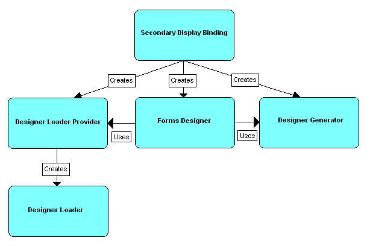
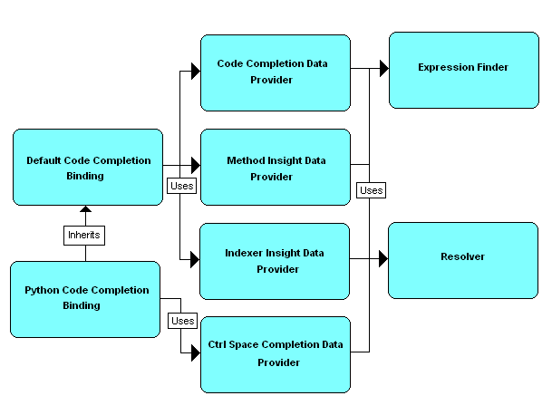

This is a tutorial about how to create a language binding for SharpDevelop using the IronPython addin as an example. As well as covering how to create a language binding it will also look at how the addin used IronPython. The source code for the IronPython addin is available at the end of this tutorial.
The tutorial will cover the following.
The starting point of this tutorial is a basic addin project. Daniel Grunwald created a video tutorial on how to create an addin for SharpDevelop, a transcript of this video is available on the wiki. The information presented in those two links will not be repeated here beyond the following summary.
<AddIn name="Python Binding"
author=""
description="Backend binding for IronPython">
<Manifest>
<Identity name="ICSharpCode.PythonBinding"/>
</Manifest>
<Runtime>
<Import assembly=":ICSharpCode.SharpDevelop"/>
<Import assembly="PythonBinding.dll"/>
</Runtime>
</AddIn>
For syntax highlighting we need a highlighting definition file (.xshd). A good starting point for writing one of these is to look at the existing files provided with SharpDevelop and create your own based on these. One thing that is worth noting is that if you want to be able to comment and uncomment a block of code using SharpDevelop's comment region toolbar button you will need to define a LineComment property in your .xshd file as shown below.
<Properties> <Property name="LineComment" value="#"/> </Properties>
This .xshd file needs to be added to the PythonBinding project and embedded as a resource in the addin. First create a new folder in the project called Resources and add the .xshd file to the project inside this folder. You can use the .xshd that is provided with the IronPython addin source code or create your own. In the Projects window, right click the added .xshd file, select Properties and change the Build action to EmbeddedResource.
To tell SharpDevelop about this highlighting definition file we need to add a SyntaxMode element to the PythonBinding.addin file.
<Path name="/SharpDevelop/ViewContent/DefaultTextEditor/SyntaxModes">
<SyntaxMode id="Python.SyntaxMode"
extensions=".py"
name="Python"
resource="ICSharpCode.PythonBinding.Resources.Python.xshd"/>
</Path>
Depending on what the root namespace of your addin project is you may need to modify the value of the resource attribute in the SyntaxMode element. In the example shown above the root namespace is ICSharpCode.PythonBinding.
When the open file dialog is displayed we want to provide a filter to show only Python files (.py). This is done by adding the following FileFilter element to the PythonBinding.addin file.
<!-- Add the "Python" entry to the Open File Dialog -->
<Path name="/SharpDevelop/Workbench/FileFilter">
<FileFilter id="Python"
insertbefore="Resources"
insertafter="Icons"
name="Python Files (*.py)"
extensions="*.py"/>
</Path>
The insertbefore and insertafter attributes determine where in the list of file filters the new file filter will be shown.
Similary when we open a project we want to provide a filter to show only Python project files (.pyproj). As before we add a FileFilter element to the .addin file.
<!-- Add the "Python" entry to the Open Project Dialog -->
<Path name = "/SharpDevelop/Workbench/Combine/FileFilter">
<FileFilter id="PythonProject"
insertbefore="AllFiles"
name="Python Project Files (*.pyproj)"
class="ICSharpCode.SharpDevelop.Project.LoadProject"
extensions="*.pyproj"/>
</Path>
Create a new folder in your addin project called Templates. Inside here you put file templates (.xft) and project templates (.xpt). For each file you add make sure the Copy to output directory property is set to Always. To change this select the file in the Projects window, right click, select Properties and change the drop down value. When you build your addin the Templates folder and all the templates should be copied to a subdirectory where the addin is built. In order to tell SharpDevelop about these new templates we add the following to the PythonBinding.addin file.
<!-- File templates --> <Path name="/SharpDevelop/BackendBindings/Templates"> <Directory id="Python" path="./Templates" /> </Path>
SharpDevelop uses MSBuild to compile projects so in order to support compiling a Python project we need to create an MSBuild task and associated .targets file. With the IronPython addin there is a separate Python.Build.Tasks project contains a PythonCompilerTask class and a SharpDevelop.Build.Python.targets file. The Python.Build.Tasks project gets built into the same folder as the addin. The .targets file has its Copy to output directory property set to Always.
The Python.Build.Tasks project also contains an IPythonCompiler interface and a PythonCompiler class which are essentially empty. These are used to unit test the PythonCompilerTask making sure it correctly sets properties on the compiler.
The PythonCompilerTask's job is to map from MSBuild types to types the IronPython's PythonCompiler can handle and compile the Python code to an assembly. Compiling with IronPython's PythonCompiler is straightforward, as shown below.
using (compiler) {
// Set what sort of assembly we are generating
// (e.g. WinExe, Exe or Dll)
compiler.TargetKind = PEFileKinds.WindowApplication;
compiler.SourceFiles = new string[] { "Program.py";
compiler.MainFile = "Program.py";
compiler.OutputAssembly = "test.exe";
// Compile the code.
compiler.Compile();
}
The most important part is telling the compiler which file contains the main entry point into the assembly.
In order to get SharpDevelop to use this new build task we need to do two things, tell SharpDevelop how to find the .targets file and implement a language binding class. The language binding class is used to create the Python project file (.pyproj) which is an MSBuild file. The created .pyproj file references the .targets file via a PythonBinPath property as shown below.
<Import Project="$(PythonBinPath)\SharpDevelop.Build.Python.targets" />
This PythonBinPath needs to be defined so SharpDevelop can set it before building the project with MSBuild. Otherwise the build will fail. To do this we add a String element to the PythonBinding.addin file.
<!--
Register path to SharpDevelop.Build.Python.targets for the MSBuild engine.
SharpDevelop.Build.Python.targets is in the PythonBinding AddIn directory
-->
<Path name="/SharpDevelop/MSBuildEngine/AdditionalProperties">
<String id="PythonBinPath" text="${AddInPath:ICSharpCode.PythonBinding}"/>
</Path>
Here the PythonBinPath is set so it points to the addin's build folder which is also where the .targets file is stored.
The language binding is defined by adding a LanguageBinding element to the PythonBinding.addin file.
<!-- Register Python MSBuild project (.pyproj) -->
<Path name="/SharpDevelop/Workbench/LanguageBindings">
<LanguageBinding id="Python"
guid="{FD48973F-F585-4F70-812B-4D0503B36CE9}"
supportedextensions=".py"
projectfileextension=".pyproj"
class="ICSharpCode.PythonBinding.PythonLanguageBinding" />
</Path>
This defines the Project Guid that will be inserted into the Python MSBuild file (.pyproj), it defines the project file extension (.pyproj) and the class that implements the ILanguageBinding interface (PythonLanguageBinding).
When you open a Python project SharpDevelop looks through the list of language bindings for one that supports the .pyproj file extension. It finds that the PythonBinding.addin has defined such a language binding and SharpDevelop returns an instance of the PythonLanguageBinding class. This class is responsible for loading an existing Python project and creating a new one. The two main methods of this class are LoadProject and CreateProject. The PythonLanguageBinding implementation of these are shown below.
public IProject LoadProject(IMSBuildEngineProvider engineProvider, string fileName, string projectName)
{
return new PythonProject(engineProvider, fileName, projectName);
}
public IProject CreateProject(ProjectCreateInformation info)
{
return new PythonProject(info);
}
Both of these methods create a new instance of the PythonProject class which represents the MSBuild project file (.pyproj). Most of the implementation for the PythonProject class is provided for you in by its base class which is SharpDevelop's CompilableProject class. All the PythonProject needs to do is add the import statement for the SharpDevelop.Build.Python.targets file when a new project is created, and when a new file is added to the project its type is set to Compile if its extension is .py. Setting the type to Compile means that a new Python file added to the project will be added inside a Compile element as shown below.
<Compile Include="Class1.py" />
Only files defined inside a Compile element will be compiled by the Python build task.
To do all this two methods, GetDefaultItemType and Create, need to be overridden in the PythonProject class as shown below.
public const string DefaultTargetsFile =
@"$(PythonBinPath)\SharpDevelop.Build.Python.targets";
/// <summary>
/// Returns ItemType.Compile if the filename has a
/// python extension (.py).
/// </summary>
public override ItemType GetDefaultItemType(string fileName)
{
if (fileName != null) {
string extension = Path.GetExtension(fileName);
if (extension.ToLowerInvariant() == ".py") {
return ItemType.Compile;
}
}
return base.GetDefaultItemType(fileName);
}
protected override void Create(ProjectCreateInformation information)
{
base.Create(information);
AddImport(DefaultTargetsFile, null);
}
You will also need to add a reference to ICSharpCode.SharpDevelop.Dom in order to compile the PythonProject class.
Just adding a language binding and project class there are no project options defined. Some of the existing project options (e.g. BuildEvents, DebugOptions) can be re-used but the Python project still needs custom project options for Application Settings and its Compiling options.
A custom project option consists of a class derived from the AbstractBuildOptions class and an XML form (.xfrm). The XML form needs to be embedded as a resource and can be designed with SharpDevelop's forms designer. A slightly simplified version of the CompilingOptionsPanel class is shown below.
public class CompilingOptionsPanel : AbstractBuildOptions
{
public override void LoadPanelContents()
{
string resourceName = "ICSharpCode.PythonBinding.Resources.CompilingOptionsPanel.xfrm";
SetupFromXmlStream(typeof(CompilingOptionsPanel).Assembly.GetManifestResourceStream(resourceName));
InitializeHelper();
ConfigurationGuiBinding b = helper.BindString("outputPathTextBox", "OutputPath", TextBoxEditMode.EditRawProperty);
b.ConnectBrowseFolder("outputPathBrowseButton", "outputPathTextBox", "Choose Folder", TextBoxEditMode.EditRawProperty);
helper.AddConfigurationSelector(this);
}
}
This class takes the CompilingOptionsPanel XML form, embedded as a resource, reads it and adds any controls defined in it to the options panel control. It then uses a helper class to bind an MSBuild property called OutputPath to a text box. After that it connects a button on the XML form to a browse folder dialog. Finally it adds a configuration selector which means the options dialog will have the Debug/Release drop down at the top allowing the user to configure the MSBuild property in the Release or Debug builds of the project.
The PythonBinding.addin file then needs to be changed so SharpDevelop is made aware of these new options dialogs for a Python project.
<!-- Project options panels -->
<Path path="/SharpDevelop/BackendBindings/ProjectOptions/Python">
<DialogPanel id="Application"
label="Application"
class="ICSharpCode.PythonBinding.ApplicationSettingsPanel"/>
<DialogPanel id="BuildEvents"
label="Build Events"
class="ICSharpCode.SharpDevelop.Gui.OptionPanels.BuildEvents"/>
<DialogPanel id="CompilingOptions"
label="Compiling"
class="ICSharpCode.PythonBinding.CompilingOptionsPanel"/>
<DialogPanel id="DebugOptions"
label="Debug"
class="ICSharpCode.SharpDevelop.Gui.OptionPanels.DebugOptions"/>
</Path>
Note that above we are re-using some of the existing options panels as well as including our custom ones.
To support code folding we need to parse the Python code and determine where the folds need to be placed. To parse the code we use the parser provided by IronPython as shown below.
PythonCompilerSink sink = new PythonCompilerSink(); CompilerContext context = new CompilerContext(fileName, sink); Parser parser = Parser.FromString(null, context, fileContent); Statement statement = parser.ParseFileInput();
Here we are using a custom compiler sink (PythonCompilerSink) which is only used to suppress some of the exceptions thrown by IronPython's parser. If no sink is passed into the CompilerContext then IronPython's SimpleParserSink which throws an exception if the parser comes across anywhere errors. If an error occurs whilst parsing a class the parser will not return any class information. Suppressing the exception will mean at least some class information is returned from the parser.
Now that we have a parser we need to use it from inside SharpDevelop. This is done by implementing the IParser interface. In the IronPython AddIn this interface is implemented in the PythonParser class. The one IParser method that needs to be implemented for folding is the Parse method.
ICompilationUnit Parse(IProjectContent projectContent, string fileName, string fileContent);
This method takes the Python source code, parses it and returns a code compile unit, which is a container for the code document object model that SharpDevelop understands.
The IronPython parser returns an AST statement which needs to be converted to SharpDevelop's code document object model. This is then done by walking the AST using a custom AST walker (PythonAstWalker).
PythonAstWalker walker = new PythonAstWalker(projectContent); walker.Walk(statement); walker.CompilationUnit.FileName = fileName; return walker.CompilationUnit;
The PythonAstWalker walks the AST looking for classes and methods and their positions in the source code which it records. The positions are recorded so SharpDevelop can create folds at the correct locations in the code. Part of the PythonAstWalker class is shown below. Here a class and its location is recorded.
public class PythonAstWalker : AstWalker
{
DefaultCompilationUnit compilationUnit;
DefaultClass currentClass;
public PythonAstWalker(IProjectContent projectContent)
{
compilationUnit = new DefaultCompilationUnit(projectContent);
}
/// <summary>
/// Walks the python statement returned from the parser.
/// </summary>
public void Walk(Statement statement)
{
statement.Walk(this);
}
/// <summary>
/// Walks a class definition.
/// </summary>
public override bool Walk(ClassDefinition node)
{
DefaultClass c = new DefaultClass(compilationUnit, node.Name.ToString());
c.Region = new DomRegion(node.Start.Line,
node.Start.Column + 1,
node.Start.Line,
node.Body.Start.Column + 1);
Location start = node.Body.Start;
Location end = node.Body.End;
c.BodyRegion = new DomRegion(start.Line, start.Column + 2, end.Line, end.Column);
// Save the class.
compilationUnit.Classes.Add(c);
// Walk through all the class items.
currentClass = c;
node.Body.Walk(this);
currentClass = null;
return false;
}
SharpDevelop needs to be told about the PythonParser so we add a new Parser element to the PythonBinding.addin.
<Path name="/Workspace/Parser">
<Parser id="Python"
supportedextensions=".py"
projectfileextension=".pyproj"
class="ICSharpCode.PythonBinding.PythonParser"/>
</Path>
We have made our first use of the IronPython assembly so we need to add a reference to it in our project.
Implementing the parser has the side effect that classes and methods now appear in the Class View. The Class View can also display properties, fields, events, base types and method parameters. Information about these items need to be extracted from the AST and added to the code document object model. In the IronPython addin, the current implementation of the PythonAstWalker will add the base type of a class and method parameters to the code dom. Base types are needed for the forms designer when checking if a form can be designed so we will take a quick look at how to do this before moving on to the forms designer itself.
First we need to modify the PythonAstWalker class. In the Walk(ClassDefinition node) method, shown in the previous section, we add a call to an AddBaseTypes method just before the compilationUnit.Classes.Add.
AddBaseTypes(c, node.Bases);
The AddBaseTypes method looks at each expression in the Bases collection and adds the name of the type to the class.
void AddBaseTypes(IClass c, IList<Expression> baseTypes)
{
foreach (Expression expression in baseTypes) {
NameExpression nameExpression = expression as NameExpression;
FieldExpression fieldExpression = expression as FieldExpression;
if (nameExpression != null) {
AddBaseType(c, nameExpression.Name.ToString());
} else if (fieldExpression != null) {
AddBaseType(c, fieldExpression.Name.ToString());
}
}
}
/// <summary>
/// Adds the named base type to the class.
/// </summary>
void AddBaseType(IClass c, string name)
{
c.BaseTypes.Add(new SearchClassReturnType(c.ProjectContent, c, 0, 0, name, 0));
}
If the base class is fully qualified (i.e. System.Windows.Forms.Form) in the source code then the IronPython parser will return a FieldExpression otherwise it will return a NameExpression.
Writing a forms designer is fairly complicated mainly because of the number of classes that you need to implement before you can see the designer working in SharpDevelop. The classes needed and their relationships are shown below.

The secondary display binding is responsible for creating the designer window when a form is open in the text editor. It also creates the forms designer, designer loader provider and designer generator.
The designer loader provider's only job is to create the designer loader. The designer loader is responsible for reading the form's source code, generating a code DOM from it so the forms designer can display the form.
The designer generator is responsible for updating the form's InitializeComponent method and generating event handlers.
Now we will look at creating the Python forms designer. The approach we will take is to do the bare minimum to get things working, using dummy values where required and then building on this base to get everything properly. The first step is to get the loading working.
First we tell SharpDevelop about our new secondary display binding by adding the following to the PythonBinding.addin file.
<!-- Python display binding -->
<Path name="/SharpDevelop/Workbench/DisplayBindings">
<DisplayBinding id="PythonDisplayBinding"
type="Secondary"
fileNamePattern="\.py$"
languagePattern="^Python$"
class="ICSharpCode.PythonBinding.PythonFormsDesignerDisplayBinding" />
</Path>
You will need to add a reference to the FormsDesigner.dll and ICSharpCode.TextEditor.dll in order to compile the project. Both of these references should have Local copy set to false.
You should also indicate to SharpDevelop that the IronPython addin depends on the FormsDesigner addin so if that is missing or disabled the IronPython addin will not be loaded. This is done by adding a Dependency element to the PythonBinding.addin file.
<Manifest> <Identity name="ICSharpCode.PythonBinding"/> <Dependency addin="ICSharpCode.FormsDesigner"/> </Manifest>
You will also need to add the FormsDesigner.dll to the Runtime section of the PythonBinding.addin file.
<Runtime> <Import assembly=":ICSharpCode.SharpDevelop"/> <Import assembly="$ICSharpCode.FormsDesigner/FormsDesigner.dll"/> <Import assembly="PythonBinding.dll"/> </Runtime>
The dollar sign indicates to SharpDevelop that it should look in the folder containing the ICSharpCode.FormsDesigner addin.
Now we need to create four classes: PythonFormsDesignerBinding, PythonDesignerLoaderProvider, PythonDesignerLoader and the PythonDesignerGenerator.
Our first pass at the PythonFormsDesignerBinding is shown below.
public class PythonFormsDesignerDisplayBinding : ISecondaryDisplayBinding
{
public PythonFormsDesignerDisplayBinding()
{
}
public bool ReattachWhenParserServiceIsReady {
get { return false; }
}
public bool CanAttachTo(IViewContent content)
{
return true;
}
public ISecondaryViewContent[] CreateSecondaryViewContent(IViewContent viewContent)
{
IDesignerLoaderProvider loader = new PythonDesignerLoaderProvider();
IDesignerGenerator generator = new PythonDesignerGenerator();
return new ISecondaryViewContent[] { new FormsDesignerViewContent(viewContent, loader, generator) };
}
There are several things wrong with the above class but it is enough to get us started. The CanAttachTo method should only attach to a Python file that contains a form or a user control. At the moment it attaches to any open file. The ReattachWhenParserServiceIsReady should return true. This is because when a large project is opened the parser may take a few seconds to finish parsing and so we may not know if the currently open file actually contains a form or user control. Returning false means we may not be able to get to the design view for a file without closing it and re-opening it. For the current implementation this is not a problem. The CreateSecondaryViewContent method is responsible for creating the forms designer, loader provider and generator. It should also make sure that it has not already created a secondary display binding for the current view but it in the above code this is not done. This is more important when ReattachWhenParserServiceIsReady returns true since we may end up with two designer windows shown. We will come back to these problems later.
The designer loader provider's only job is to create a designer loader.
public class PythonDesignerLoaderProvider : IDesignerLoaderProvider
{
public DesignerLoader CreateLoader(IDesignerGenerator generator)
{
return new PythonDesignerLoader();
}
}
Our first pass at a designer loader is shown below.
public class PythonDesignerLoader : CodeDomDesignerLoader
{
PythonProvider codeDomProvider = new PythonProvider();
public PythonDesignerLoader()
{
}
protected override CodeDomProvider CodeDomProvider {
get { return codeDomProvider; }
}
protected override ITypeResolutionService TypeResolutionService {
get { return null; }
}
protected override CodeCompileUnit Parse()
{
return new CodeCompileUnit();
}
protected override void Write(CodeCompileUnit unit)
{
}
}
}
There are some things wrong with this. The Parse method should parse the source code and generate a code DOM that can be loaded by the forms designer. The Write method should generate the Python code and update the form's source code. Generally this is done by calling the designer generator's MergeFormChanges method. Again we will address these problems later on.
The PythonDesignerLoader is derived from Microsoft's CodeDomDesignerLoader so you will need to add a reference to System.Design.
The designer generator implements the IDesignerGenerator interface. For now we implement empty methods.
public class PythonDesignerGenerator : IDesignerGenerator
{
PythonProvider pythonProvider = new PythonProvider();
FormsDesignerViewContent viewContent;
public PythonDesignerGenerator()
{
}
public CodeDomProvider CodeDomProvider {
get { return pythonProvider; }
}
public void Attach(FormsDesignerViewContent viewContent)
{
}
public void Detach()
{
}
public void MergeFormChanges(CodeCompileUnit unit)
{
}
public bool InsertComponentEvent(IComponent component, EventDescriptor edesc, string eventMethodName, string body, out string file, out int position)
{
position = 0;
file = String.Empty;
return true;
}
public ICollection GetCompatibleMethods(EventDescriptor edesc)
{
return new ArrayList();
}
[Obsolete("This method is not used by the forms designer.")]
public ICollection GetCompatibleMethods(EventInfo edesc)
{
return new ArrayList();
}
}
The MergeFormChanges method should update the form's source code with any changes made in the designer. This method is called when the forms designer is open and the form is saved or when the source code is switched to.
The InsertComponentEvent method is used to create an empty event handler in the form's source code.
The GetCompatibleMethods method is used to return methods that are compatible with an event. These methods will then be shown in the Properties window in the drop down list for an event.
If the IronPython addin is now built you can switch to the forms designer and back again but you will get an error saying that nothing can be designed. To get the forms designer to work we need to return a CodeCompileUnit that contains a form. As a quick test we can use the IronPython's PythonProvider to create a CodeCompileUnit from a hard coded Python source code string.
protected override CodeCompileUnit Parse()
{
string source = "class MainForm(System.Windows.Forms.Form):\r\n" +
" def __init__(self):\r\n" +
" self.InitializeComponent()\r\n" +
"\r\n" +
" def InitializeComponent(self):\r\n" +
" pass\r\n";
PythonProvider provider = new PythonProvider();
return provider.Parse(new StringReader(source));
}
The above code should be added to the designer loader. Note that we are using the fully qualified name for the base class (System.Windows.Forms.Form) otherwise the designer will not be able to create a form instance to display in the designer. This is something that we will need to fix later.
Now we will get the generator working. The generator's MergeFormChanges method needs to be called from the loader's Write method. The loader will also need to be told about the generator so we need to change the loader provider as shown below.
public class PythonDesignerLoaderProvider : IDesignerLoaderProvider
{
public DesignerLoader CreateLoader(IDesignerGenerator generator)
{
return new PythonDesignerLoader(generator);
}
}
The loader can now call the generator's MergeFormChanges method.
IDesignerGenerator generator;
public PythonDesignerLoader(IDesignerGenerator generator)
{
this.generator = generator;
}
protected override void Write(CodeCompileUnit unit)
{
generator.MergeFormChanges(unit);
}
The generator's MergeFormChanges method needs to get access to the text editor, find the InitializeComponent method, generate the new python source code from the CodeCompileUnit and then update the source code in the text editor.
FormsDesignerViewContent viewContent;
public void Attach(FormsDesignerViewContent viewContent)
{
this.viewContent = viewContent;
}
public void Detach()
{
this.viewContent = null;
}
public void MergeFormChanges(CodeCompileUnit unit)
{
GeneratedInitializeComponentMethod generatedInitalizeComponentMethod = GeneratedInitializeComponentMethod.GetGeneratedInitializeComponentMethod(unit);
if (generatedInitalizeComponentMethod == null) {
throw new InvalidOperationException("InitializeComponent not found in generated code.");
}
TextEditorControl textEditor = viewContent.TextEditorControl;
ParseInformation parseInfo = ParserService.ParseFile(textEditor.FileName, textEditor.Text);
generatedInitalizeComponentMethod.Merge(textEditor.Document, parseInfo.BestCompilationUnit);
}
The MergeFormChanges method locates the InitializeComponent method in the generated code dom and then updates the source code.
public void Merge(IDocument document, ICompilationUnit compilationUnit)
{
// Get the document's initialize components method.
IMethod documentInitializeComponentsMethod = GetInitializeComponents(compilationUnit);
// Generate source code from the code DOM.
string generatedCode = GenerateCode();
Console.WriteLine("GeneratedCode: " + generatedCode);
// Parse the generated source code so we can
// find the InitializeComponent method. We can
// only generate code for the entire form.
IMethod generatedCodeInitializeComponentMethod = GetInitializeComponentFromGeneratedCode(generatedCode);
string generatedInitializeComponentsMethodBody = GetMethodBody(generatedCodeInitializeComponentMethod, generatedCode);
// Merge the code.
DomRegion methodRegion = GetBodyRegionInDocument(documentInitializeComponentsMethod);
int startOffset = document.PositionToOffset(new Point(methodRegion.BeginColumn - 1, methodRegion.BeginLine - 1));
int endOffset = document.PositionToOffset(new Point(methodRegion.EndColumn - 1, methodRegion.EndLine - 1));
document.Replace(startOffset, endOffset - startOffset, generatedInitializeComponentsMethodBody);
}
The GeneratedInitializeComponentMethod's Merge method is shown above, for the other methods take a look at the actual class since there is too much code to go through all of it here. The Merge method locates the InitializeComponent method in the text editor, generates the new Python code, locates the InitializeComponent method in the generated code and then updates the source code. The Python code is generated using the IronPython's PythonProvider's GenerateCodeFromType method.
The Python forms designer will now generate the correct code and update the text editor so let us return to the loader and get it working with the actual source code. First we need to pass the source code document to the designer loader provider so we update the PythonFormsDesignerDisplayBinding class.
public ISecondaryViewContent[] CreateSecondaryViewContent(IViewContent viewContent)
{
TextEditorControl textEditor = ((ITextEditorControlProvider)viewContent).TextEditorControl;
IDesignerLoaderProvider loader = new PythonDesignerLoaderProvider(textEditor.Document);
IDesignerGenerator generator = new PythonDesignerGenerator();
return new ISecondaryViewContent[] { new FormsDesignerViewContent(viewContent, loader, generator) };
}
The designer loader provider just passes the document onto the designer loader as shown below.
public class PythonDesignerLoaderProvider : IDesignerLoaderProvider
{
IDocument document;
public PythonDesignerLoaderProvider(IDocument document)
{
this.document = document;
}
public DesignerLoader CreateLoader(IDesignerGenerator generator)
{
return new PythonDesignerLoader(document, generator);
}
}
Now we can get the source code from the document in the designer loader.
public class PythonDesignerLoader : CodeDomDesignerLoader
{
PythonProvider codeDomProvider = new PythonProvider();
IDesignerGenerator generator;
IDocument document;
public PythonDesignerLoader(IDocument document, IDesignerGenerator generator)
{
this.document = document;
this.generator = generator;
}
protected override CodeCompileUnit Parse()
{
PythonProvider provider = new PythonProvider();
return provider.Parse(new StringReader(document.TextContent));
}
The designer loader will work with simple forms as long as the base class is fully qualified so let's fix that.
protected override CodeCompileUnit Parse()
{
PythonProvider provider = new PythonProvider();
CodeCompileUnit unit = provider.Parse(new StringReader(document.TextContent));
FixCompileUnit(unit);
return unit;
}
void FixCompileUnit(CodeCompileUnit unit)
{
CodeTypeDeclaration formClass = FindForm(unit);
FullyQualifyBaseType(formClass);
}
static void FullyQualifyBaseType(CodeTypeDeclaration type)
{
CodeTypeReference reference = type.BaseTypes[0];
if (reference.BaseType == "Form") {
reference.BaseType = "System.Windows.Forms.Form";
}
}
The code above finds the form and then changes the base type so it is fully qualified.
If we add a control to the form, such as a button, and close and re-open the designer, the loader will fail with a CodeDomSerializerException saying that the variable 'button1' is undeclared. The problem here is that the forms designer needs the button1 field to be added to the code DOM. This is not done by IronPython's PythonProvider class. In the IronPython addin the code DOM generated by the PythonProvider is altered so it can be loaded by the forms designer in the PythonDesignerCodeDomGenerator class. We will not look at that class in detail here but instead return to the other problems we skipped over at the start with the PythonFormsDesignerDisplayBinding class. First the CanAttach method needs to attach only to Python files that are designable. This is done by using the IsDesignable method of the forms designer.
public bool CanAttachTo(IViewContent content)
{
ITextEditorControlProvider textEditorControlProvider = content as ITextEditorControlProvider;
if (textEditorControlProvider != null) {
string fileName = GetFileName(content);
if (fileName != null && IsPythonFile(fileName)) {
ParseInformation parseInfo = ParserService.ParseFile(fileName, textEditorControlProvider.TextEditorControl.Text, false);
return FormsDesignerSecondaryDisplayBinding.IsDesignable(parseInfo);
}
}
return false;
}
/// <summary>
/// Gets the filename from the view content. This method
/// takes into account the fact that the view content may
/// be untitled.
/// </summary>
string GetFileName(IViewContent viewContent)
{
if (viewContent.IsUntitled) {
return viewContent.UntitledName;
}
return viewContent.FileName;
}
/// <summary>
/// Checks the file's extension represents a python file.
/// </summary>
static bool IsPythonFile(string fileName)
{
string extension = Path.GetExtension(fileName);
if (extension != null) {
return extension.ToLower() == ".py";
}
return false;
}
If we set ReattachWhenParserServiceIsReady to true then the CreateSecondaryViewContent method will need to make sure that it has not already added a forms designer window otherwise we may get two windows added. This can be done by adding the following code at the start of the CreateSecondaryViewContent method.
foreach (ISecondaryViewContent existingView in viewContent.SecondaryViewContents) {
if (existingView.GetType() == typeof(FormsDesignerViewContent)) {
return new ISecondaryViewContent[0];
}
That finishes the overview of how to implement a forms designer, now onto code completion.
Code completion is a huge area so we will not cover everything here. The IronPython addin itself only has limited support for code completion, so we will limit ourselves to looking at code completion for import statements and static types. The main classes involved when implementing code completion are shown below.

The DefaultCodeCompletionBinding is the starting point for code completion support. It is responsible for enabling and disabling different types of code completion (e.g. method completion, comment completion). It handles key presses in the text editor, calls the appropriate completion data provider and shows the code completion window.
The PythonCodeCompletionBinding derives from the DefaultCodeCompletionBinding and adds support for the keywords "from" and "import". This support means that when a space character is typed in after a keyword the CtrlSpaceCompletionProvider is used to show a completion list.
The CodeCompletionDataProvider returns a list of code completion items at the current location.
The MethodInsightDataProvider provides information about overloaded methods when the opening bracket of a method is typed in.
The IndexerInsightDataProvider provides a list of items, for example attribute names, after an opening square bracket is typed in.
The CtrlSpaceCompletionDataProvider is derived from the CodeCompletionDataProvider class and provides completion when the user presses Ctrl+Space or types in a keyword followed by a space character.
The ExpressionFinder locates the expression before and around the current cursor position. By default the text editor provides a basic expression finder which can be used whilst you are first implementing code completion. Often you will find you need more control over finding the expression so a custom expression finder can be created. The IronPython addin implements its own custom expression finder.
The Resolver takes the expression returned from the ExpressionFinder and tries to determine what the expression actually is (e.g. is it a method, a class or a namespace). When it has worked this out it returns a resolve result which can then be used to generate a list of completion data. There is no default implementation for the resolver so the IronPython addin implements its own in the PythonResolver class.
The starting point for adding code completion is to create a class that implements the ICodeCompletionBinding interface.
public interface ICodeCompletionBinding
{
bool HandleKeyPress(SharpDevelopTextAreaControl editor, char ch);
}
The DefaultCodeCompletionBinding class implements that interface but it also implements a lot of code completion functionality which saves us from doing the same. In the IronPython addin's case we have the PythonCodeCompletionBinding class that derives from the DefaultCodeCompletionBinding. Before we look at this class it is worth noting that it might have been possible to just create a class that implements the ICodeCompletionBinding interface and uses Python's dir function to get basic code completion working. When you are using the interactive interpreter you can type in things like "dir()" or "dir(System.Console)" to see the items that can be used at that point. For now this is left as an exercise for the reader.
To tell SharpDevelop that we have a code completion binding we add a new CodeCompletionBinding element to the PythonBinding.addin file.
<!-- The Python code completion binding -->
<Path name = "/AddIns/DefaultTextEditor/CodeCompletion">
<CodeCompletionBinding id="Python"
extensions=".py"
class="ICSharpCode.PythonBinding.PythonCodeCompletionBinding"/>
</Path>
The first thing we will do is look at how to get code completion when you type in an import statement. To do this the PythonCodeCompletionBinding needs to handle the import keyword, generate the list of imports and then show the list in a window.
public class PythonCodeCompletionBinding : DefaultCodeCompletionBinding
{
public PythonCodeCompletionBinding()
{
}
/// <summary>
/// Shows the code completion window if the keyword is handled.
/// </summary>
/// <param name="word">The keyword string.</param>
/// <returns>true if the keyword is handled; otherwise false.</returns>
public override bool HandleKeyword(SharpDevelopTextAreaControl editor, string word)
{
if (word != null) {
switch (word.ToLowerInvariant()) {
case "import":
case "from":
CtrlSpaceCompletionDataProvider dataProvider = new CtrlSpaceCompletionDataProvider(ExpressionContext.Importable);
editor.ShowCompletionWindow(dataProvider, ' ');
return true;
}
}
return false;
}
}
The CtrlSpaceCompletionDataProvider will ask SharpDevelop for the parser that handles the current file extension and then it will ask the parser for a resolver. The CtrlSpaceCompletionDataProvider will then call the resolver's CtrlSpace method. So our PythonParser needs to return a resolver.
public IResolver CreateResolver()
{
return new PythonResolver();
}
The PythonResolver class implements the IResolver interface and for now we will return a array of strings back from the CtrlSpace method.
public class PythonResolver : IResolver
{
public PythonResolver()
{
}
public ResolveResult Resolve(ExpressionResult expressionResult, int caretLineNumber, int caretColumn, string fileName, string fileContent)
{
return null;
}
public ArrayList CtrlSpace(int caretLine, int caretColumn, string fileName, string fileContent, ExpressionContext context)
{
ArrayList results = new ArrayList();
results.Add("a");
results.Add("b");
results.Add("c");
return results;
}
}
If the IronPython addin is now compiled you will see the list a, b, c is displayed when typing in the space character after an import statement. To get the correct items in the list we can use the IProjectContent's AddNamespaceContents method as shown below.
public ArrayList CtrlSpace(int caretLine, int caretColumn, string fileName, string fileContent, ExpressionContext context)
{
ArrayList results = new ArrayList();
ParseInformation parseInfo = ParserService.GetParseInformation(fileName);
ICompilationUnit compilationUnit = parseInfo.MostRecentCompilationUnit;
compilationUnit.ProjectContent.AddNamespaceContents(results, String.Empty, compilationUnit.ProjectContent.Language, true);
return results;
}
When we now press the space character we get better results. Now let us look at getting simple code completion when you type in the dot character after the namespace in an import statement.
If you look at the DefaultCodeCompletionBinding's HandleKeyPress method you will see that by default when the dot character is typed in the CodeCompletionDataProvider is used to get a list of items for code completion. This code is shown below.
case '.':
if (enableDotCompletion) {
editor.ShowCompletionWindow(new CodeCompletionDataProvider(), ch);
return true;
} else {
return false;
}
The CodeCompletionDataProvider will look for an ExpressionFinder for the current file extension, this will fail since we do not currently have one for Python files, then it will use the TextUtilities GetExpressionBeforeOffset method instead to get the expression before the cursor. This saves us from writing our own expression finder initially but you may well find that it is not good enough and you will probably want to write your own. The IronPython addin has its own custom expression finder because this is the only way to set the expression context type (i.e. is the expression an import or namespace) is at creation in the expression finder class. The expression returned from the TextUtilities class is then passed to the resolver's Resolve method. The resolver then needs to work out what the expression refers to and return code completion information. For now we will cheat and pretend that the expression resolves to the System namespace.
public ResolveResult Resolve(ExpressionResult expressionResult, int caretLineNumber, int caretColumn, string fileName, string fileContent)
{
return new NamespaceResolveResult(null, null, "System");
The NamespaceResolveResult used above will return a list of code completion items for the specified namespace. Now when we type in "import System" followed by the dot character we get code completion for the System namespace. What we need to do is check that the expression is an import statement and work out the namespace being used. The correct way of doing this is shown below.
public ResolveResult Resolve(ExpressionResult expressionResult, int caretLineNumber, int caretColumn, string fileName, string fileContent)
{
// Search for a namespace.
string ns = GetNamespaceExpression(expressionResult.Expression);
if (!String.IsNullOrEmpty(ns)) {
return new NamespaceResolveResult(null, null, ns);
}
return null;
}
static string GetNamespaceExpression(string expression)
{
string ns = GetNamespaceExpression("import ", expression);
if (ns == null) {
ns = GetNamespaceExpression("from ", expression);
}
if (ns != null) {
return ns;
}
return expression;
}
/// <summary>
/// Removes the "import " or "from " part of a namespace expression if it exists.
/// </summary>
static string GetNamespaceExpression(string importString, string expression)
{
int index = expression.IndexOf(importString, StringComparison.InvariantCultureIgnoreCase);
if (index >= 0) {
return expression.Substring(index + importString.Length);
}
return null;
}
Now we get completion results for namespaces after an import statement. A side effect of this code is that we also get code completion inside a class when we type in the dot character after a namespace. Let'ss take a look at getting a list of methods for a type such as System.Console. To do this we need to alter the Resolve method so that it looks for a type.
// Search for a class name.
ParseInformation parseInfo = ParserService.GetParseInformation(fileName);
ICompilationUnit compilationUnit = parseInfo.MostRecentCompilationUnit;
IClass matchingClass = compilationUnit.ProjectContent.GetClass(expressionResult.Expression);
if (matchingClass != null) {
return new TypeResolveResult(null, null, matchingClass);
}
First we look for the parse information for the current file, then from the project content we try to match the expression against a class. If this matches we return a TypeResolveResult which will provide the completion data. Note that the code above will only work with fully qualified class names, so typing in Console followed by the dot character will not work, but typing in System.Console will work.
Well, that is a quick introduction to code completion, for more information take a look at the code for the addins that support code completion (e.g. IronPython addin, Boo Binding addin code, and CSharpBinding addin).
How you implement code conversion will depend on what functionality the parser you are using can give you. With IronPython we can generate code from Microsoft's code DOM so we need a way of converting from SharpDevelop's code DOM to Microsoft's. Microsoft's code DOM does not support all the features of many languages, Python included, so the code conversion will be limited in what it can produce.
The IronPython addin currently only supports converting code from C# and VB.NET to Python. When the menu option to convert code to Python is selected, the code in the text editor is parsed using the C# or VB.NET parsers, a SharpDevelop code DOM generated, this code DOM is converted to Microsoft's code DOM and then IronPython's PythonProvider is used to generate Python code which is displayed in a new text editor window.
For now we will look at converting from C# to Python. The code in the IronPython addin will be slightly different since it handles both C# and VB.NET, but since both of these languages will produce a SharpDevelop code DOM the basic concepts will be useful for either of these languages. First we need to add a new menu item for the conversion.
<Path name="/SharpDevelop/Workbench/MainMenu/Tools/ConvertCode">
<Condition name="ActiveContentExtension" activeextension=".cs" action="Disable">
<MenuItem id="ConvertToPython"
insertafter="CSharp"
insertbefore="VBNet"
label="Python"
class="ICSharpCode.PythonBinding.ConvertToPythonMenuCommand"/>
</Condition>
</Path>
This menu item is only enabled when the open file has a C# file extension. The menu class is straightforward. It takes the code, creates a CSharpToPythonConverter class and shows the generated Python code.
public class ConvertToPythonMenuCommand : AbstractMenuCommand
{
public override void Run()
{
// Get the code to convert.
IViewContent viewContent = WorkbenchSingleton.Workbench.ActiveWorkbenchWindow.ViewContent;
IEditable editable = viewContent as IEditable;
// Generate the python code.
CSharpToPythonConverter converter = new CSharpToPythonConverter();
string pythonCode = converter.Convert(editable.Text);
// Show the python code in a new window.
FileService.NewFile("Generated.py", "Python", pythonCode);
}
}
The CSharpToPythonConverter class uses the NRefactory library so the addin project needs a reference to ICSharpCode.NRefactory. The CSharpToPythonConverter class is fairly large so we will only look at a few of the methods. It works by creating a SharpDevelop code DOM from the source code, walking this code DOM and converting it to Microsoft's code DOM, and then generating Python code using IronPython's PythonProvider.
public class CSharpToPythonConverter : IAstVisitor
{
public CSharpToPythonConverter()
{
}
/// <summary>
/// Converts the C# source code to Python.
/// </summary>
public string Convert(string source)
{
CodeCompileUnit pythonCodeCompileUnit = ConvertToCodeCompileUnit(source);
// Convert to Python source code.
return ConvertCodeCompileUnitToPython(pythonCodeCompileUnit);
}
/// <summary>
/// Converts the C# source code to a code DOM that
/// the PythonProvider can use to generate Python. Using the
/// NRefactory code DOM (CodeDomVisitor class) does not
/// create a code DOM that is easy to convert to Python.
/// </summary>
public CodeCompileUnit ConvertToCodeCompileUnit(string source)
{
// Convert to code DOM.
CompilationUnit unit = GenerateCompilationUnit(source);
// Convert to Python code DOM.
return (CodeCompileUnit)unit.AcceptVisitor(this, null);
}
public CompilationUnit GenerateCompilationUnit(string source)
{
using (IParser parser = ParserFactory.CreateParser(SupportedLanguage.CSharp, new StringReader(source))) {
parser.Parse();
return parser.CompilationUnit;
}
}
public static string ConvertCodeCompileUnitToPython(CodeCompileUnit codeCompileUnit)
{
PythonProvider pythonProvider = new PythonProvider();
StringWriter writer = new StringWriter();
CodeGeneratorOptions options = new CodeGeneratorOptions();
options.BlankLinesBetweenMembers = false;
options.IndentString = "\t";
pythonProvider.GenerateCodeFromCompileUnit(codeCompileUnit, writer, options);
return writer.ToString().Trim();
}
The code DOM conversion is initiated in the ConvertToCodeCompileUnit method. The AcceptVisiter call causes the SharpDevelop code DOM to be visited part by part. The CSharpToPythonConverter class implements the IAstVisiter interface so as each part of the code DOM is visited the corresponding method on the IAstVisiter class is called.
The NRefactory library already provides a CodeDomVisitor class that will generate a Microsoft code DOM from SharpDevelop's code DOM. Unfortunately the code DOM generated by this class needed some changes before the PythonProvider would generate good Python code so a custom converter class was created.
That is the end of this tutorial on language bindings. The full source code for the IronPython addin is available at the end of this tutorial. Instructions on how to compile the addin are in the next section.